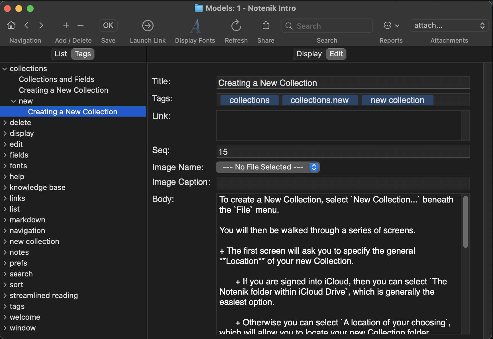

Notenik Intro
Back to Notenik.app
11 Tags
Notenik allows you to assign one or more tags to each Note, and each tag may have one or more levels.
You assign tags to a Note by typing them into the Tags field on the Edit tab.
Once you have entered tags, then you can use the Tags tab – on the left, next to the List tab – to see your Notes organized by tag.
Click on a disclosure triangle to show lower-level tags, or the Notes having a given tag.
Click on a Note's title within the Tags tab to see the content of the Note appear on the right.
Next: The Link Field